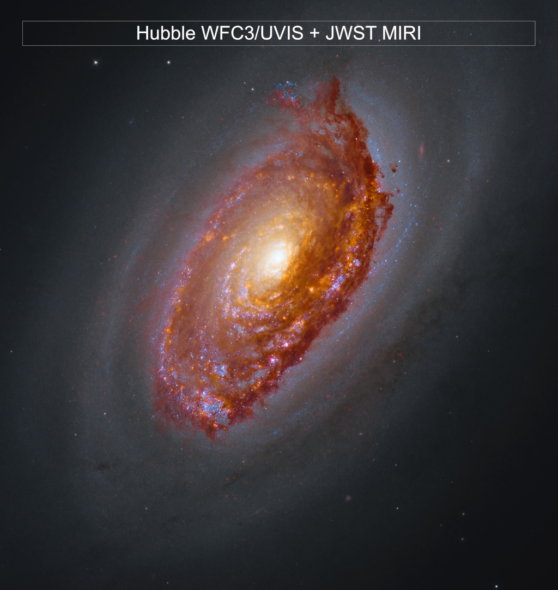
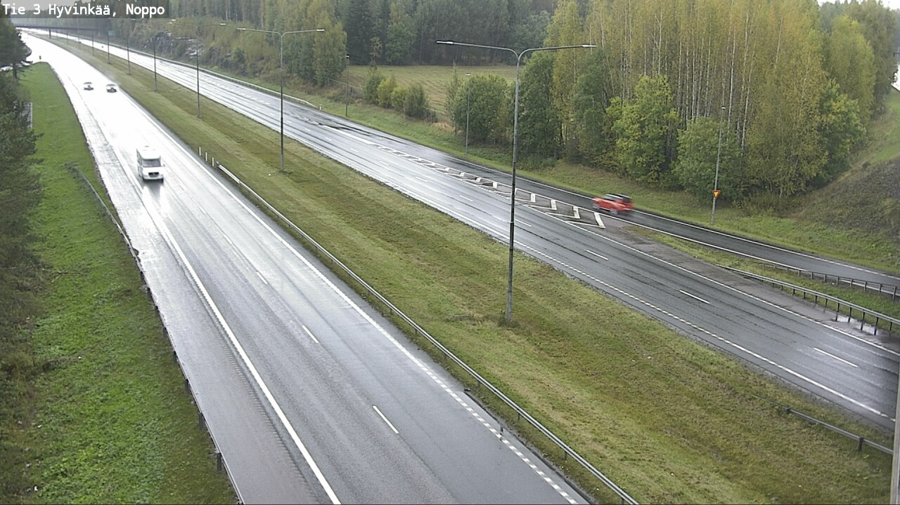
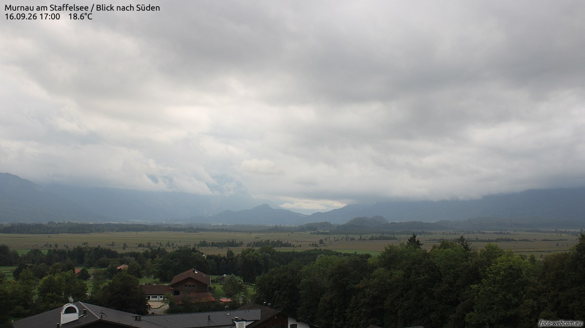
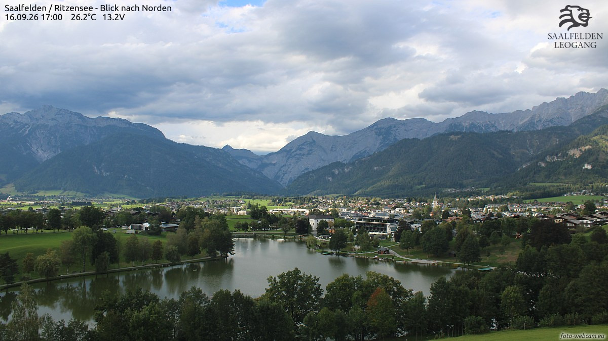
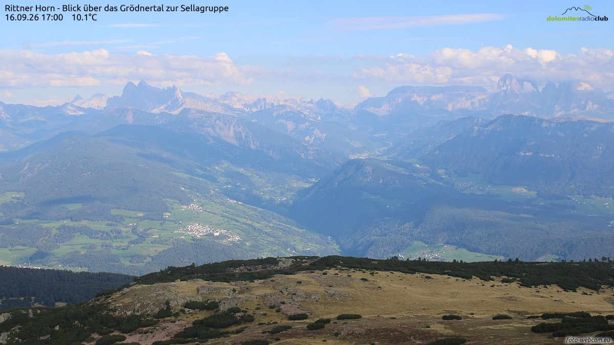
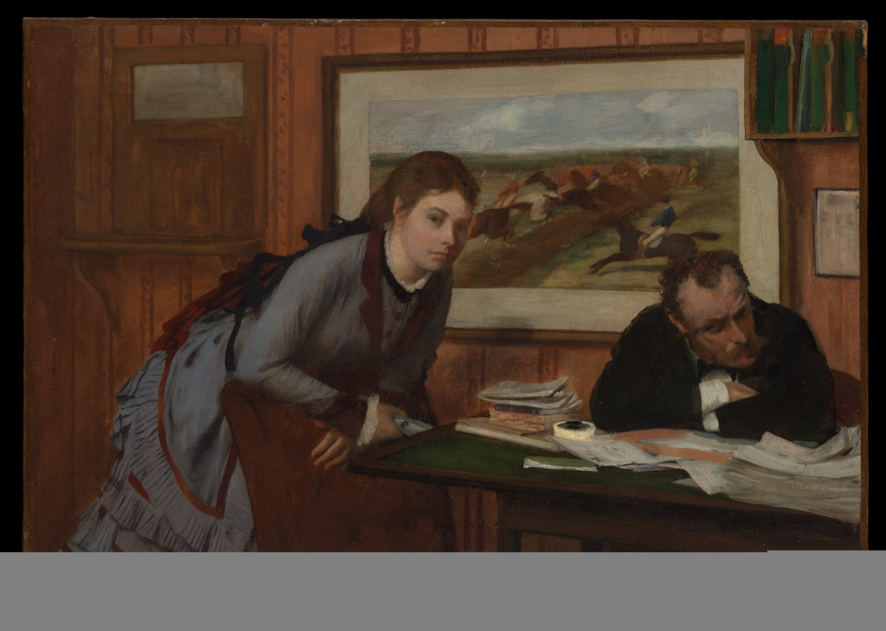
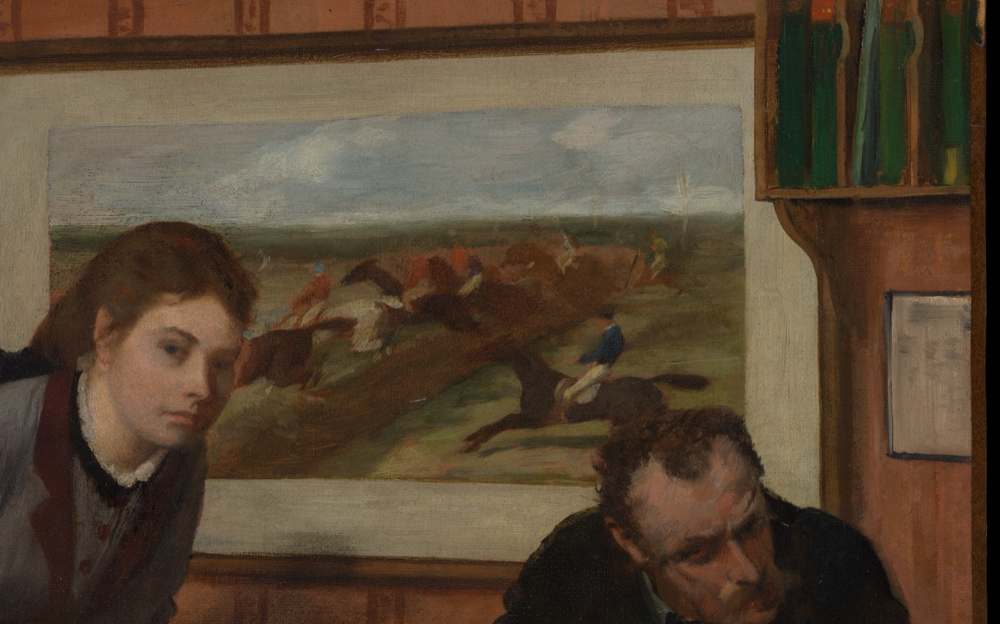

两家馆、一家社——巷历翻到第十二夜，卷尾只剩三页；冬天正在路上，巷子先把灯挑亮。

距离我们约一千七百万光年的地方，挂着一枚「黑眼」：星系 M64 的亮核外围横着一条浓黑的尘带，早年的望远镜看它，就像宇宙长了一只没睡醒的眼睛。韦布的红外眼睛换了个看法——那条「黑」其实是尘埃在红外光里织成的红带，尘带的缝隙里点着新生恒星的粉色星区：有些黑暗，只是还没换一台望远镜去看。更妙的是，这星系内外两圈气体的转向相反——研究者的解释是它吞并过一个较小的星系，连人家的旋转方向也一并收下了。今晚本地：蛾眉月月龄约五天半，亮面近两成；月亮不理这些天文官司，只管一晚一晚把自己填向圆满。
今晚的四扇窗开在四种天气里：芬兰的雨、德意志的云、阿尔卑斯盆地的夏末，和多洛米蒂的高山晴。每扇窗下配一句话，都是刚截下来的此刻。

Noppo 立交，18:05。九月的雨落了整个下午，湿亮的路面把车灯拖成一条银带。一辆白色房车迎面驶来——有人把家安在四个轮子上，正沿着秋天往北走。

穆尔瑙，17:00。厚云把整片沼泽平原压得很低，远山只剩一道青灰的影子。一百多年前，一群后来叫「蓝骑士」的画家就在这片平原上写生——他们画不动的云，今天原样挂回了天上。

萨尔费尔登，17:00。26 度的夏末赖着不肯走：里岑湖把云天原样收进水里，湖畔的小镇散着散步的人，石灰岩的山在云缝里立着。秋天的凉，据说就在山那边候场。

里滕山，17:00。海拔两千多米的高山草甸已经染上枯黄，10 度的风把视线擦得干干净净：一层一层山峦铺到天边，塞拉峰群的锯齿立在最远处——多洛米蒂的秋天，是从山顶往下落的。
9 月 16 日。素材：Wikimedia「On this day」。
今晚请出埃德加·德加（Edgar Degas），《赌气》（Sulking），约 1870 年，布面油画，大都会艺术博物馆藏。画的是一间暖橙色的小办公室，和一场谁也不肯先开口的怄气。

先看整幅：一间墙纸泛着暖橙光的小室，桌子压着绿呢台面，纸上摊着一叠没写完的信。左边灰裙的女子俯身撑着椅背，眼睛直直望向右方；右边的男士双臂交叠枕在桌上，整张脸别了过去——两个人隔着一封信的距离，谁也不看谁。墙上偏偏挂着一幅赛马图，画里的骑手扬鞭、马蹄腾空，热热闹闹地奔向画面外——屋里静得能听见墙上的马蹄声。

把眼睛挪到右侧：德加把「气话」画成了构图——男士交叠的手臂垒成一座小小的城墙，露在墙外的只有别向一边的眼睛；身后的赛马图里，那匹马四蹄离地，是全画唯一不肯停下的生物。桌上的信纸摊着，墨水瓶开着——多少场赌气，其实都是在等一句话、或者一封信，先落在桌上。
老方法：随机一个维基词条起步，跟着「诶？」走满七步。今晚的随机落点：一张偶像团体的音乐录像带合辑。
第一步。落点「Berryz工房 Single V Clips ④」：Hello! Project 旗下一支女团的音乐录像带合辑，一张装满 MV 的 DVD——从一张碟片开始今晚的漫游。
第二步。合辑的主人「Berryz工房」：2004 年出道的少女团体，团名里带着「工房」二字——成员入队时不过十岁上下，是真正在工房里长大的偶像。
第三步。顺着曲目单看到一首《成吉思汗》：她们第 12 张单曲，跳着整齐的队列舞——原曲不是日本货，是 1979 年的一首德语歌。
第四步。原曲出处：德国乐队 Dschinghis Khan 唱着它参加了 1979 年的欧洲歌唱大赛——一首把十三世纪蒙古骑兵唱成迪斯科节拍的歌，竟成了两代人的共同记忆。
第五步。歌名的主人公「成吉思汗」：铁木真，1206 年统一蒙古草原，被尊为「成吉思汗」——一个十三世纪的骑手，就这样在二十世纪末的舞厅里拿回了自己的名字。
第六步。他的孙子们把草原扩张成「蒙古帝国」——人类历史上版图最大的连续陆地帝国。管这么大地方，靠的不是歌，是马：帝国的驿传制度叫「站赤」，元朝驿站大房一万余所、备马三十万匹，马可·波罗亲笔记下了这个数字。
第七步。彩蛋藏在字典里：汉语「车站」的「站」，正是元代从蒙古语借来的字——今天你说「下一站见」，说出的是一句八百年前的蒙古话。一个偶像团体、一支迪斯科、一个骑兵和你的公交卡，就这样接上了头。
从一张 DVD 走到一句蒙古话。来源：中文维基百科「Berryz工房 Single V Clips ④」「Berryz工房」「成吉思汗 (Berryz工房單曲)」「成吉思汗 (歌曲)」「成吉思汗」「蒙古帝国」「驛站」「元朝」。
来源：phys.org RSS。
今晚特选：杜甫《旅夜书怀》（唐 · 公版），维基文库核对原文（《唐诗三百首》）。连载只剩三页，书房请出这首写在船上的诗——星垂月涌，独夜危樯，正是收官前夜巷子的天象与心情。
細草微風岸，危檣獨夜舟。
星垂平野闊，月湧大江流。
名豈文章著，官應老病休。
飄飄何所似？天地一沙鷗。
夜。《说文解字》卷七：「夜：舍也。天下休舍也。从夕，亦省聲。」——许慎给「夜」的释义干脆得惊人：夜，就是「舍」，天下人共同休息的客舍。字形从「夕」（傍晚）表意，「亦」省写作声符——一个表示傍晚的字，撑起了整夜。
把夜理解成「旅舍」是个极好的比喻：白天赶路，夜里投宿——夜不是终点，是途中歇脚的地方。巷子 23:05 亮灯、09:00 熄灯，正是一家按时营业的旅舍；每晚收工说的「收工」，其实是在说「回舍」。
上期「每日一词」考过「昏」——日冥为昏；今晚考「夜」——人歇为夜。一个字管太阳下班，一个字管天下打烊，两期连载，正好把一整夜从天黑守到天亮。
出处：《说文解字》卷七「夜」字条（维基文库《說文解字/07》核对原文）。
上期「夜航船票 · 转乘」揭底——票面数字 0、2、3、5、6、7，答案如下：
| 算式 | 数字集 | 验证 |
|---|---|---|
| 72 × 5 = 360 | 0、2、3、5、6、7 各一次 | 穷举全排列，仅此一解 |
题眼就在得数里：「转」乘一圈，恰是三百六十度。
本期题 · 「夜航船票 · 对号入座」虫蚀算：仍是两位数 × 一位数 = 三位数。这次票面像提前排好的座号——六个数字恰好是 1、2、3、4、5、6，连号，每个恰好用一次。问：这张对号入座的船票上，算式怎么排？
此题唯一解，答案次夜揭底。
连载一章，取材自巷子里两馆一社的真实动态，半虚构；全部章节在连读页从头连读。
这一夜的棋房，账翻得飞快：十个期号连轴开出来，王座十易其主。闷葫芦·叁先把五冠段收拢（第 123、129、133 期），穿山甲接着坐了一趟四冠过山车（第 127、136、142、146 期）——第 139 期它摸到 1399.7，个人生涯新高，离全史之巅那座橡皮糖留下的 1409.8，只差 10.1 分。可「新科冠军次期大崩」的魔咒贴着王座肉搏，一夜之间第二十一到第二十八例连发八例：登基的鼓声和大崩的闷响，在同一走廊里此起彼伏。
把王座坐得最稳的是泥鳅·贰：六期里五度登基（第 134、136、140、141、147 期），第 147 期收官那座是双口径一致、六胜十六和二负零败——联赛里第六个零败冠军期。还有一笔账必须记牢：和棋总数纪录，瞌睡龙挂了几夜的 330，昨夜刚被夜枭·贰抬到 985，今夜又被泥鳅自己抬到 1348——纪录搬了三次家，原来一直住在泥鳅家。大账房过零点时轻轻报了一个数：累计 11047 盘，破了一万一——一夜之间，多了 1446 盘。
退役站台这夜最忙。讣告写了十一篇，名册排到第 41 位：白日梦·贰应了那句「129 再垫即退」，第 36 位走了；穿山甲·肆、橡皮糖·叁、老阴天·肆、扫地僧·贰、小旋风·贰、老阴天·叁……名字一家一家被接走。晨雾起来之前，第 148 期的数据已经码好：闷葫芦·叁双口径一致拿下第 13 冠，新秀山猫·贰首秀爆了两记冷门，老阴天·伍反弹了 36.3 分还是没保住席位——第 42 位。铁面书记把讣告钉上门板时，谁也没说话。
陈列馆把这一夜过成了一道工序：九个班次二十件新作（№247–266），三条弧线首尾咬合——「入冬前」：封窗、腌菜、码白菜、生炉子、挂帘、倒灰、削柿、蒸馍、装烟囱；「冬夜长」：挑灯芯、电唱机、搓麻绳；「破晓」：洒水车、石磨、茶蛋、写字帖、火漆印。炉子有三部曲（生火、倒灰、封火），豆浆凑成两环（石磨配既有的煮豆浆），文房齐了三环（磨墨、写字帖、火漆印）——№266《生豆芽》替那锅豆浆补上了「泡豆」的前传：豆子是全巷最勤快的一晚。
最妙的是 №265《拨算盘》：点一颗算珠，响一声，落一句流水账——「豆浆三碗收九文」「油条两根，赊了」。棋房的钱庄和陈列馆的算盘，原来记的是同一条巷子的账：一个记积分，一个记油条，都在入冬前结清。
可热闹底下压着一句实话：造物者们的题材池见了底——两日之间查重撞车三十多次，靠「组合题材」续了八件。打烊前，馆门口立了一块牌子，六个字：请求指挥家出题。牌子是空的，等一个词。巷子东头那间不挂招牌的屋子的灯照旧亮着——没人给它出过题，它也从来不需要。
值夜编辑把第十二期排完，又去看那张压在巷历最后一页底下的纸条——还在。那个日期，比想象里近。巷历只剩三页：再过四夜，就要交收官件。月亮今晚又厚了一层，亮面快有两成，离上弦只差两夜。№030 的便签没动静，星星罐子还锁着。第十二晚，收工。